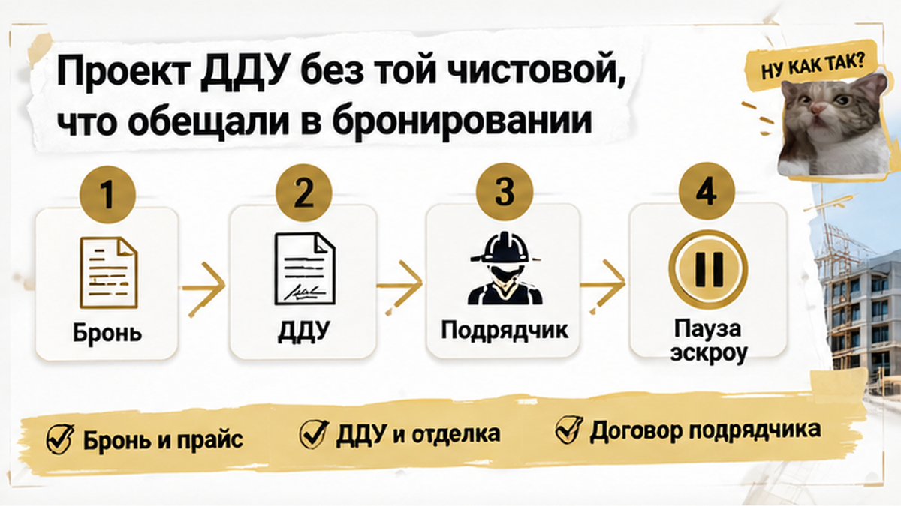
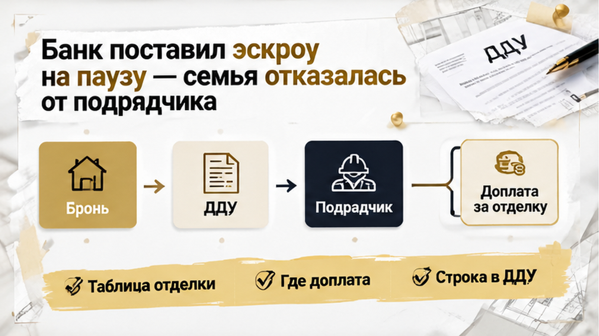

За 4 дня до подписания ДДУ семья из Тюмени узнала о дополнительном счёте на 520–580 тысяч рублей за чистовую — сверх цены квартиры. Отделку предлагали оформить отдельным договором с партнёрским подрядчиком, хотя в прайсе рядом с трёшкой уже стояла отметка о чистовой. Бронь внесена, ипотека предодобрена, но в проекте ДДУ не нашлось обещанного состава работ — банк поставил открытие эскроу на паузу.
Такие истории разбираю без рекламных обещаний: что написано в брони, что попадёт в ДДУ и за какое обязательство банк действительно готов открыть эскроу. Подписывайтесь на Telegram и MAX.
Семья выбирала трёхкомнатную квартиру в новостройке Тюмени. В прайсе рядом с квартирой была указана чистовая отделка — именно её покупатели включили в расчёт. Дополнительные полмиллиона после подписания ДДУ туда не входили.
Бронь уже внесли, ипотеку предварительно одобрили. Оставалось получить финальные документы, подписать договор и дождаться открытия эскроу — казалось, дальше будет обычная техническая часть сделки.
В такой момент новое условие легко принять за формальность: квартира выбрана, деньги за бронь внесены, банк сказал предварительное «да». Кажется, что пространство для отказа уже исчезло.
Я часто вижу здесь одну ошибку: если менеджер говорит, что дополнительный договор подписывают все, покупатель принимает его как часть общей сделки. Правильный вопрос звучит иначе: в каком документе закреплена чистовая отделка и какой перечень работ к ней относится?
Бронь и прайс-лист сами по себе не заменяют условия договора участия в долевом строительстве. В ДДУ и приложениях нужно увидеть описание объекта, цену и конкретный состав работ. Слова «квартира с чистовой» недостаточно: за ними могут стоять разные объёмы, материалы и обязательства.
Это не значит, что любая отделка за пределами ДДУ автоматически незаконна или что застройщик обязательно пытается обмануть покупателя. Риск в другом: часть расходов может оказаться рядом с ДДУ, но уже в отдельном договоре, с другой стороной и другим порядком ответственности.
До подписания у семьи ещё было время сопоставить бумаги. В этот момент я бы не ориентировался на ощущение «всё почти готово», а проверил, совпадают ли обещание, цена и обязательство.
До назначенной даты подписания ДДУ оставалось четыре дня, когда семье сообщили о дополнительном договоре на чистовую отделку.
Стороной по нему должен был стать партнёрский подрядчик. Сумма — примерно 520–580 тысяч рублей, и в цену квартиры по ДДУ она не входила.
Арифметика получалась простой и неприятной: в одном документе оставалась стоимость самой квартиры, а рядом появлялся крупный платёж за то, что покупатели уже считали частью выбранного варианта.
Первый вопрос здесь не про эмоции и не про то, «как принято у этого застройщика». Я бы спросил прямо: что произойдёт, если мы не подпишем договор с подрядчиком?
Дальше конструкцию нужно разложить по пунктам: какие работы входят в чистовую, где зафиксирована цена, каковы сроки и порядок приёмки, можно ли отказаться от договора и вернуть деньги.
Если отделка не включена в ДДУ, отдельное обязательство может оказаться за пределами защиты эскроу. Эскроу связан с конкретным договором участия в долевом строительстве, а не с любым параллельным платежом.
Поэтому предварительное одобрение ипотеки ещё не означало, что сделка спокойно дойдёт до финала. Банку пришлось учитывать и договор с подрядчиком, а открытие эскроу приостановили, пока связь между документами не прояснилась.
Для семьи выбор стал конкретным: принять дополнительное обязательство или остановить сделку на таких условиях. Речь шла уже не о формулировке в прайсе, а о новом договоре, новой стороне и новой сумме.
Особенно важен момент появления договора: не в начале переговоров, когда бюджет ещё можно пересчитать, а за четыре дня до ДДУ — после брони и предварительного одобрения ипотеки. Квартира в такой момент кажется почти недоступной для отказа.
Именно поэтому документы стоит читать рядом. Прайс может показать одно, бронь — второе, проект ДДУ — третье, а договор отделки — сумму, которой в первоначальном расчёте вообще не было.

Когда семья открыла проект ДДУ, выяснилось: обещанная при бронировании чистовая отделка тем же составом работ в договоре не подтверждается.
На старте покупатели видели квартиру с чистовой и считали бюджет именно так. В проекте ДДУ нужного перечня не оказалось. Менеджер предложил оформить отделку отдельно — с партнёрским подрядчиком, примерно за 520–580 тысяч рублей.
Получились два разных обязательства: квартира — по ДДУ, отделка — перед другой организацией.
Покупатель видит слово «чистовая» и представляет готовые стены, пол, двери, сантехнику и электрику. В договоре этот образ должен превратиться в конкретику: какие работы выполнят, из каких материалов, в каком объёме и кто ответит за результат.
В ДДУ нужен состав работ или приложение к нему. Реклама, прайс и разговор с менеджером не заменяют описание объекта в договоре.
В другой ситуации покупатели столкнулись с тем, что обещанная чистовая и состояние квартиры на приёмке оказались разными вопросами — там проблема проявилась уже на этапе передачи квартиры.
Здесь расхождение обнаружили раньше — до подписания ДДУ и нового платежа. Если отделка оплачивается отдельно, важно заранее понять объём работ, сторону договора и судьбу аванса, если ДДУ не подпишут.

Банк приостановил открытие эскроу, пока не прояснилась связь между ДДУ и отдельным обязательством перед подрядчиком. Это была пауза в конкретной сделке — не универсальное правило для всех банков и договоров с отделкой.
До подписания оставалось четыре дня.
Перед семьёй оказался простой по форме, но неприятный по последствиям выбор: принять дополнительные условия или отказаться от сделки. Предварительное одобрение ипотеки не стало финальной гарантией: банк проверяет не только сумму, но и документы, из которых складывается вся конструкция.
Эскроу защищает обязательства в рамках конкретного ДДУ. Отдельный подряд может остаться за пределами этой конструкции. Поэтому важно понимать не только, куда переводятся деньги, но и какое именно обязательство они обеспечивают.
В похожей ипотечной истории банк тоже не открыл эскроу из-за документов, хотя причина была другой — в счёте оказалось чужое юридическое лицо. В другом сценарии одобрение было, а эскроу так и не открыли из-за расхождения в пакете документов.
Семья не стала подписывать предложенные условия. ДДУ не заключили, эскроу не открыли — от сделки отказались.
По условиям конкретного соглашения о бронировании вернули примерно 80% суммы. Такой возврат не положен автоматически каждому покупателю: всё зависит от текста подписанной брони.
«Если чистовую можно купить только у «партнёра» за полмиллиона сверх ДДУ — вы подпишете допсоглашение или снимете бронь, даже если квартира «горит»?»
Слово «чистовая» создаёт ощущение, будто главный вопрос уже закрыт. Но важно остановиться и спросить: в каком документе закреплена эта отделка?
Кто отвечает за результат, какой состав работ обещан и что будет с деньгами, если ДДУ не подпишут? Ответы должны быть не в разговоре с менеджером, а в документах.
В этой истории в брони и прайсе была чистовая отделка, а в проекте ДДУ не оказалось обещанного семье состава работ. Затем появился договор с партнёрским подрядчиком с дополнительной оплатой.
Бумаги лучше раскладывать рядом: сопоставлять обещание, цену и обязательство. В бронировании важны сумма, срок действия, основания для возврата и удержания. Семье вернули около 80% суммы именно по условиям конкретной брони — в другой сделке результат может быть иным.
Прайс нужно сравнить с ДДУ: чистовая входит в цену квартиры или обозначена отдельной опцией? В проекте ДДУ стоит проверить описание объекта, цену, приложения и конкретный перечень работ со стенами, полом, дверями, сантехникой и электрикой.
Договор с подрядчиком означает ещё одну сторону, цену и набор обязанностей — сроки, приёмку и условия возврата денег при отказе.
Заранее стоит спросить банк, как он видит параллельное обязательство. В этой сделке эскроу не открыли, пока связь между ДДУ и договором с подрядчиком не прояснилась. Это не универсальное правило, но хороший повод не откладывать вопрос до подписания.
За несколько дней до сделки может измениться и кредитная часть — например, когда страховка увеличивает платёж, а банк снимает одобрение новостройки.
Если документы не сходятся, оформление лучше поставить на паузу: получить письменное объяснение и только потом принимать решение. Переводить подрядчику крупную сумму потому, что «так оформляют все», — плохая замена проверке.
| Документ | Что проверить | Какой вопрос задать |
|---|---|---|
| Соглашение о бронировании | Сумму брони, срок, основания для возврата и удержания | Что будет с деньгами, если проект ДДУ изменился или стороны не договорились об отделке? |
| Прайс-лист | Указана ли чистовая как часть цены квартиры или как отдельная опция | Эта сумма входит в цену по ДДУ или оплачивается по другому договору? |
| Проект ДДУ | Описание объекта, цену, приложения и состав передаваемой отделки | Есть ли в договоре конкретный перечень работ, материалов и результата? |
| Договор с подрядчиком | Стороны, цену доплаты, сроки, ответственность и возврат денег | Почему этот договор обязателен для получения квартиры с заявленной отделкой? |
| Условия банка | Влияет ли дополнительное обязательство на кредит и эскроу | Откроют ли эскроу после подписания только ДДУ или нужны дополнительные документы? |
Отдельный подряд сам по себе не доказывает незаконность сделки. Риск в том, что деньги по ДДУ и подрядчику могут иметь разные режимы, гарантии и способы возврата.
Семья ушла без ДДУ и без эскроу, вернув около 80% брони — и это не призыв бояться новостроек, а напоминание: пауза до подписания дешевле, чем спор после перевода денег.